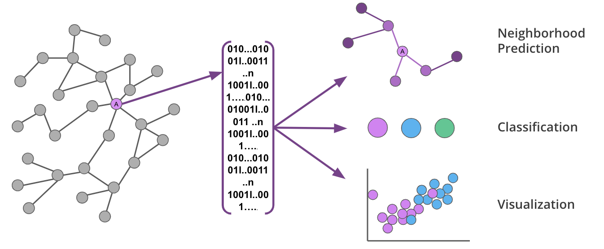
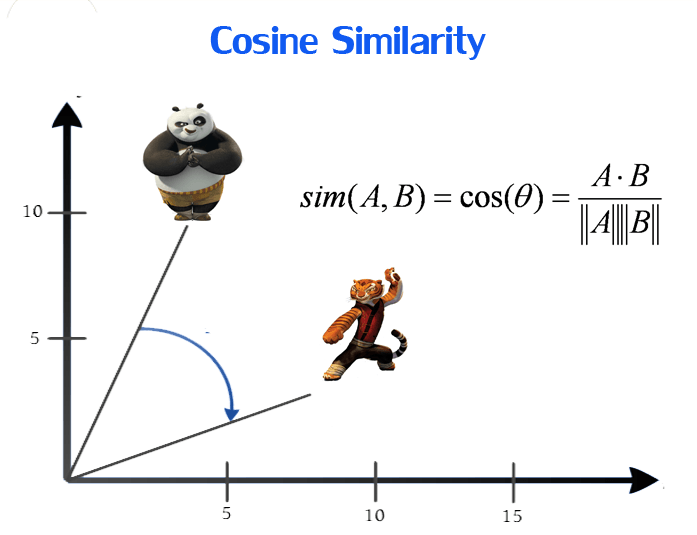
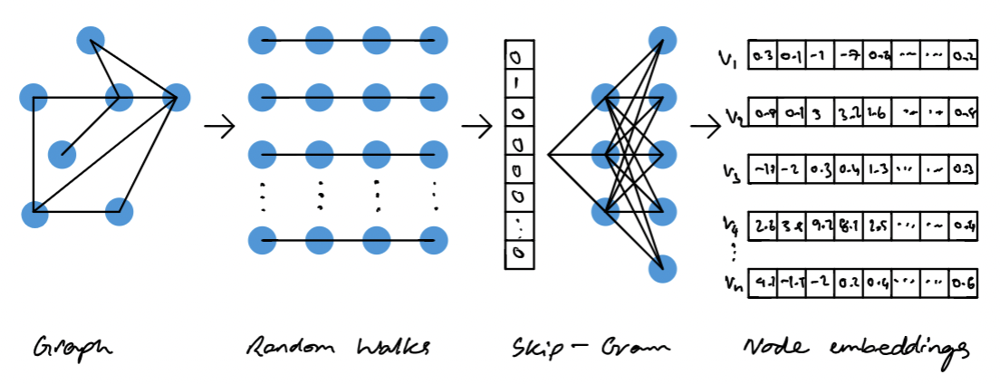

今天分享的内容主要是 如何用图嵌入(网络思维和嵌入思维)表征企业，表征高管的职业经历。
一、高管职业经历
管理的本质是一种实践，在某些情形下，阅历比简历更重要，丰富的职业经历有助于企业高管形成多元化的思维结构、广阔的管理视野、丰富的社会资源和过人的胆识。因此，对于企业而言，了解高管的职业经历非常重要，这可以帮助企业更好地了解高管的背景和潜力，从而更好地为企业的发展提供支持。
而研究高管的个人特质，已有的研究，主要从年龄、性别、学历等类别型变量开展研究，即使从从职业经历研究，也是作为离散变量，没有充分挖掘职业经历的信息。
今天分享的内容主要是 如何用网络思维和嵌入思维表征企业，表征高管的职业经历。

本技术文的创新价值
- 网络思维;
节点、边。 企业是节点，高管一般有多个企业就职经历，可以在任意2个企业构件一个边。
- 嵌入思维;
把企业网络中的节点转化为向量表示，企业是n维向量，高管也是同样的n维向量。类似于阴阳五行思维表征世间万物完事。
向量计算；
事物都用N维向量表征，那么不同类别的事物，我们就可以对高管和企业之间就可以进行向量计算。
Kmeans聚类;
将很多企业向量或高管职业经历向量进行聚类，可能得到理想的"分类"标签(人工解读后的cluster数字就是很好的分类标签)。相似度计算 招聘来的高管对于该企业是否带来更多的异质性、或者带来更多的相似性。某企业的高管团队的异质性可以度量出一个准确的数字。招聘新的高管，也可以测量给改企业带来多少的相似性或者异质性。

二、职业经历聚类算法步骤
首先，我们需要构建一个企业的网络图，其中每个节点代表一个企业，每条边代表两个企业之间的关系，比如同城市、同行业， 而高管职业经历中的任意两家企业天然也是一个边。然后，我们使用node2vec算法对这个网络图进行嵌入，得到每个企业的向量表示。
接着我们需要对每个高管的职业经历进行处理。一般来说，一个高管的职业经历可能涉及多个企业，因此我们需要将这些企业的向量求平均，得到一个高管的职业经历向量。这个向量可以代表高管的职业经历背景，可以用于后续的各类分析，比如聚类。
最后我们可以使用聚类算法（比如k-means算法）对高管职业经历向量进行聚类分析， 具有相似职业经历的高管分为一组。
三、数据导入
高管中的职业经历信息一般存在于没有规律的个人简历中，提取起来是比较复杂，这里可能需要用到正则表达式、命名实体识别等将处于简介中的企业名识别出来。
高管职业经历信息一般存在于个人简历中，而个人简历中的职业经历信息往往不太规律，多个企业名也没有明显的分隔符，因此需要用到一些技术手段来将企业名识别出来，以便后续的处理和分析。
首先，我们可以使用正则表达式来匹配企业名。正则表达式是一种用于匹配文本的工具，可以根据一定的规则来匹配出所需要的信息。在这里，我们可以使用正则表达式来匹配一些常见的企业名词，比如“有限公司”、“股份有限公司”等。这样可以一定程度上识别出企业名，但对于一些特殊的企业名还需要进行进一步处理。
其次，我们可以使用命名实体识别（NER）技术来识别企业名。命名实体识别是自然语言处理的一项任务，旨在识别文本中的命名实体，比如人名、地名、组织名等。在这里，我们可以使用NER技术来识别文本中的企业名，从而更准确地提取出高管的职业经历信息。
最后，我们需要对提取出的企业名进行去重和整理。在提取出的企业名中，有一些是重复的，有一些是不必要的，需要将它们去掉。同时，对于每个高管的职业经历信息，我们需要将提取出的企业名整理成一个有序的序列，方便后续的处理和分析。
总之，对于高管职业经历信息的提取，需要用到一些技术手段，包括正则表达式、命名实体识别等。这些技术手段可以帮助我们更准确地提取出高管的职业经历信息，为后续的分析和处理提供基础。但限于篇幅和主题，今天使用虚构的50条高管记录数据做实验。
import pandas as pd
df = pd.read_csv('high_executives.csv')
df.head()
| 姓名 | 性别 | 出生年份 | 学历 | 职业经历 | |
|---|---|---|---|---|---|
| 0 | 高管1 | 女 | 2000 | 本科 | 华为-CFO,Facebook-CFO,Facebook-CEO |
| 1 | 高管2 | 女 | 1989 | 本科 | 百度-CEO,阿里巴巴-CFO,亚马逊-COO |
| 2 | 高管3 | 女 | 1992 | 博士 | 谷歌-CTO,腾讯-COO,百度-COO |
| 3 | 高管4 | 女 | 1989 | 本科 | IBM-COO,苹果-CFO,微软-COO |
| 4 | 高管5 | 男 | 1960 | 本科 | 谷歌-COO,苹果-CFO,百度-COO |
#记录数
len(df)
50
四、训练Node2Vec模型
4.1 node2vec算法
Node2Vec是一种基于深度学习的图嵌入算法，旨在将图中的节点映射到低维向量空间中，从而方便后续的分析和处理。具体来说，Node2Vec算法可以将节点的局部邻域结构转化为向量表示，同时保留节点之间的全局结构信息。如果熟悉Wordc2Vec的同学，理解起来会比较容易，Node2Vec是基于word2vec算法开发出来的，将职业经历中每个企业看做词语，训练得到企业向量表示。

在Node2Vec算法中，每个节点的向量表示由两个部分组成：一个是节点自身的特征向量，另一个是节点在不同邻域结构下的向量表示。算法的核心思想是通过两个步骤来生成节点的向量表示：
- 随机游走：对于每个节点，从它的邻居节点中随机选择一个节点进行访问，然后在这个节点的邻居中进行同样的随机选择。这个过程可以生成一系列的节点序列，其中每个序列都代表了一个从起始节点出发的随机游走路径。
- Skip-gram模型：基于这些随机游走路径，使用Skip-gram模型进行向量表示的学习。Skip-gram模型是一种常见的自然语言处理模型，用于学习词向量。在Node2Vec算法中，可以将节点序列看作“句子”，将每个节点看作“词”，然后使用Skip-gram模型来学习节点向量的表示。
Node2Vec算法通过随机游走和Skip-gram模型的结合，可以生成具有丰富语义信息的节点向量，同时保留了节点之间的全局结构信息。这种算法可以应用于各种不同的图结构，包括社交网络、知识图谱、生物信息学等领域，具有广泛的应用前景。
在高管职业经历数据的应用中，我们可以将每个企业看作图中的一个节点，然后使用Node2Vec算法来训练企业向量模型。这样可以将企业的职业经历信息转化为向量表示，方便后续的分析和处理。
import re
import networkx as nx
from node2vec import Node2Vec
# 读取CSV文件并提取职业经历中的公司名列表
companies = ['IBM', '谷歌', 'Facebook', '苹果', '微软', '亚马逊', '阿里巴巴', '腾讯', '百度', '华为']
companies_regex = r'|'.join(companies)
df['companies'] = df['职业经历'].apply(lambda x: re.findall(companies_regex, x))
# 构建公司名之间的边
G = nx.Graph()
for companies in df['companies']:
for i, company1 in enumerate(companies):
for company2 in companies[i+1:]:
G.add_edge(company1, company2)
# 使用node2vec库生成公司名向量
# 企业向量维度 16
node2vec = Node2Vec(G, dimensions=16, walk_length=10, num_walks=100)
model = node2vec.fit(window=10, min_count=1)
# model.wv[company] 查询某个企业的向量
vectors = [model.wv[company] for company in G.nodes()]
Computing transition probabilities: 0%| | 0/10 [00:00<?, ?it/s]
Generating walks (CPU: 1): 100%|████████████| 100/100 [00:00<00:00, 3920.94it/s]
4.2 理解嵌入
本文嵌入的维度是16维， 其实这里用任意 N 维都可以嵌入表示任意一个事物。这里理解起来比较难，咱们用熟悉的事情来假装理解嵌入维度的设定。 在中国传统文化中，经常使用n维来刻画、描述、表征任意事物。例如
- 2维， 阴阳思维去描述事物的阴阳
- 5维， 五行，金木水火土描述事物
而在本技术中， Node2Vec(G, dimensions=16, walk_length=10, num_walks=100) dimensions=16 即用16维表征每个企业，得到16维的企业向量。 需要注意的是， 我们可能都无法理解 16维的任意一个维度的含义。如果设置成2维、5维或者其他维，我们也是无法理解对应的维度含义。因为中国传统文化，已经定义了每个维度的含义，然后再去表征事物。但是我们是先定义了维度数，所以维度的含义是未知的。
五、计算高管职业经历向量
定义一个 companys2vec(companys) 函数 ，该函数可以把多家企业就职的经历转为 「职业经历向量」。
将高管的职业经历转化为向量，每家企业是一个 16 维向量，最简单粗暴的办法是求平多个就职企业向量的均值，均值向量也是 16 维。
import numpy as np
def companys2vec(companys):
cvs = []
for company in companys:
try:
cvs.append(model.wv[company])
except:
pass
return np.mean(np.array(cvs), axis=0)
companys2vec(companys=['华为', 'Facebook', 'Facebook'])
array([-0.03054439, 0.28417936, 0.23475488, 0.36075735, -0.16633254,
-0.06266979, 0.74403137, 0.16226356, 0.01991086, -0.15565623,
0.34757233, 0.3079434 , 0.19876878, 0.01175458, -0.55069256,
0.01623819], dtype=float32)
#批量计算，得到高管的职业经历向量 career_vec
df['career_vec'] = df['companies'].apply(companys2vec)
df.head()
| 姓名 | 性别 | 出生年份 | 学历 | 职业经历 | companies | career_vec | |
|---|---|---|---|---|---|---|---|
| 0 | 高管1 | 女 | 2000 | 本科 | 华为-CFO,Facebook-CFO,Facebook-CEO | [华为, Facebook, Facebook] | [-0.03054439, 0.28417936, 0.23475488, 0.360757... |
| 1 | 高管2 | 女 | 1989 | 本科 | 百度-CEO,阿里巴巴-CFO,亚马逊-COO | [百度, 阿里巴巴, 亚马逊] | [-0.007476224, 0.2823672, 0.20479268, 0.281800... |
| 2 | 高管3 | 女 | 1992 | 博士 | 谷歌-CTO,腾讯-COO,百度-COO | [谷歌, 腾讯, 百度] | [-0.040801946, 0.27067217, 0.20773596, 0.34468... |
| 3 | 高管4 | 女 | 1989 | 本科 | IBM-COO,苹果-CFO,微软-COO | [IBM, 苹果, 微软] | [-0.022640707, 0.31426176, 0.1841877, 0.323161... |
| 4 | 高管5 | 男 | 1960 | 本科 | 谷歌-COO,苹果-CFO,百度-COO | [谷歌, 苹果, 百度] | [-0.030689942, 0.25639233, 0.19499178, 0.33937... |
六、高管职业经历聚类Kmeans
Kmeans是一种常见的聚类算法，旨在将相似的数据点分组为同一类别，从而发现数据的内在结构。Kmeans算法的优点是简单易实现，对于大型数据集也具有较高的效率。它可以适用于各种类型的数据，包括数值型、文本型和图像型等数据。同时，Kmeans算法可以通过调整簇的个数来控制聚类结果的细粒度程度，比如选择较大的簇个数可以得到更细致的聚类结果。

Kmeans算法的缺点是需要指定簇的个数k，这个参数选择较大或者较小都可能导致聚类结果不理想。同时，Kmeans算法对于离群点比较敏感，可能会导致簇中心偏离聚类的本质结构。如果对数据不了解，需要使用手肘法则等方式确定K。 这里假设我们对数据很了解，那么可以指定K=5。
from sklearn.cluster import KMeans
# 对高管的职业经历向量进行聚类分析
kmeans = KMeans(n_clusters=5, random_state=0)
kmeans.fit(np.array(df['career_vec'].to_list()))
df['cluster'] = kmeans.labels_
# 保存结果为CSV文件
df.to_csv('high_executives_with_clusters.csv', index=False, encoding='utf-8-sig')
最后， 结果呈现
注意cluster是没有意义的数字，不同的数字代表着丰富的信息，例如职能、行业、地域、晋升路径等， 需要需要我们「人工解读」理解每个数字对应的含义。 这里摘抄一下 何瑛,于文蕾,戴逸驰,王砚羽.高管职业经历与企业创新[J].管理世界,2019,35(11):174-192. 内的内容，该文章没有使用向量表示，但是可以提供理解cluster的角度。
在 CEO 职业经历的分类上，现有文献的研究视角各有不同。
- 在「职能方面」，比较受认可的是 Hambrick 和 Mason（1984）所提出的 3 部门分类法，即产出型职能（营销与研发）、生产型职能（过程管理、设备管理与会计） 和外围型职能（法律与融资），之后 Abebe 等（2010）较多学者沿用这种分类；
- 在「行业方面」，Crossland 等（2014）将 其区分为能源、材料、工业、非必需消费品、日用消费品、保健、金融、信息技术、电信服务和公用设施等 10 种类 型；在组织机构方面，Hu 和 Liu（2015）分为生产性组织（如企业）、非生产性组织（如大学）以及行政或政府组织 3 类；
- 在「地域类型」方面，Schmid 和 Wurster（2017）根据是否具有国际工作经历分为两类；
- 在「工作背景」方面，Fan 等 （2007）和 Benmelech 和 Frydman（2015）分别根据是否具有从政经历和从军经历进行区分；
- 另外在「晋升路径」上， Brockman 等（2019）则区分了内部提拔与外部聘请两种类型。
总的来说，上述有关管理者职业经历的文献大多 集中于研究管理者职业经历的某一方面，对复合型职业经历进行整合研究的文献十分罕见。 事实上，不同方面的职业经历之间往往存在某种联系，相互作用最终塑造了独特的管理风格（Kaplan et al.，2008）。
import pandas as pd
df2 = pd.read_csv('high_executives_with_clusters.csv')
df2.head()
| 姓名 | 性别 | 出生年份 | 学历 | 职业经历 | companies | career_vec | cluster | |
|---|---|---|---|---|---|---|---|---|
| 0 | 高管1 | 女 | 2000 | 本科 | 华为-CFO,Facebook-CFO,Facebook-CEO | ['华为', 'Facebook', 'Facebook'] | [-0.03054439 0.28417936 0.23475488 0.360757... | 0 |
| 1 | 高管2 | 女 | 1989 | 本科 | 百度-CEO,阿里巴巴-CFO,亚马逊-COO | ['百度', '阿里巴巴', '亚马逊'] | [-0.00747622 0.2823672 0.20479268 0.281800... | 1 |
| 2 | 高管3 | 女 | 1992 | 博士 | 谷歌-CTO,腾讯-COO,百度-COO | ['谷歌', '腾讯', '百度'] | [-0.04080195 0.27067217 0.20773596 0.344685... | 3 |
| 3 | 高管4 | 女 | 1989 | 本科 | IBM-COO,苹果-CFO,微软-COO | ['IBM', '苹果', '微软'] | [-2.2640707e-02 3.1426176e-01 1.8418770e-01 ... | 2 |
| 4 | 高管5 | 男 | 1960 | 本科 | 谷歌-COO,苹果-CFO,百度-COO | ['谷歌', '苹果', '百度'] | [-0.03068994 0.25639233 0.19499178 0.339379... | 3 |
df2.cluster.value_counts()
2 14
3 13
4 9
0 7
1 7
Name: cluster, dtype: int64
代码获取
链接: https://pan.baidu.com/s/1pZQj5_s2sv5LYZ-EerJD1Q 提取码: 6m7v